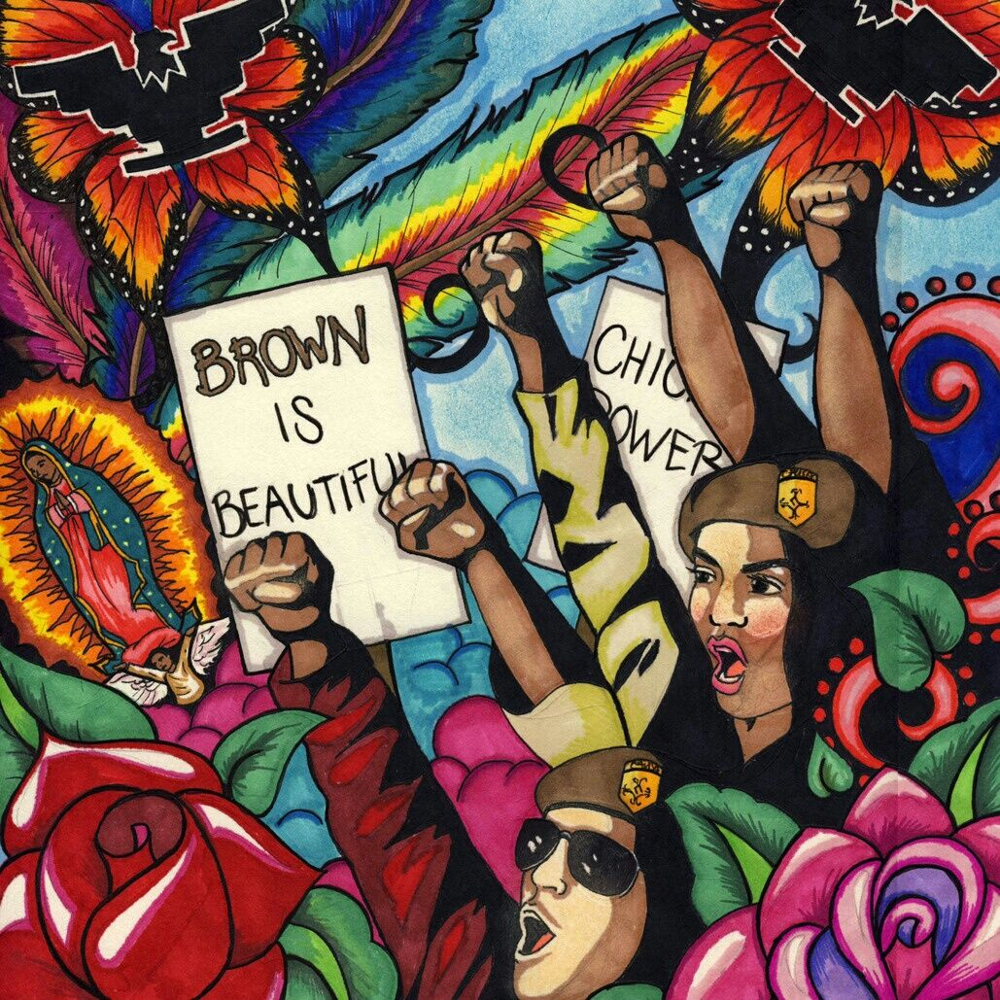

Larger Movements Expanded

Three Artists Who Started It All
Come explore the art, lives, and legacy of Las Mujeres Muralistas. They were the first prominent group of chicana muralists in the United States or in South America. During the 1970’s, Las Mujeres Muralistas helped transform the landscape of the Mission District in San Francisco, California with their beautiful and meaningful works of art. Further your knowledge of this incredible group, as well as learn about the larger movements that inspired them and artistic legacies they left behind.
Come explore the art, lives, and legacy of Las Mujeres Muralistas. They were the first prominent group of chicana muralists in the United States or in South America. During the 1970’s, Las Mujeres Muralistas helped transform the landscape of the Mission District in San Francisco, California with their beautiful and meaningful works of art. Further your knowledge of this incredible group, as well as learn about the larger movements that inspired them and artistic legacies they left behind.